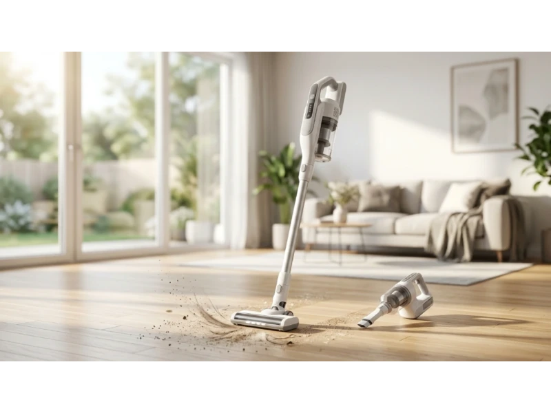
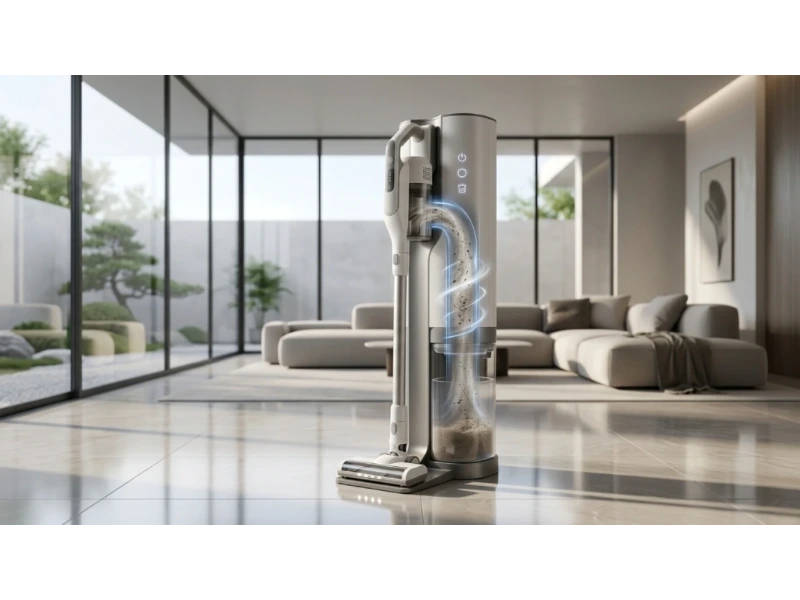

Cleaning your home should not feel like a workout. But for many people, it still does. Heavy vacuums, tangled cords, and awkward designs make a simple task frustrating. And when you finally finish, you still wonder if the floor is truly clean.
That's why lightweight vacuums are getting so much attention in 2026. These machines are no longer just smaller versions of traditional vacuums. They are smarter, easier to use, and built around what people actually care about today — things like real-time dirt detection, less wrist strain, and less mess when emptying the bin.
But not all lightweight vacuums are truly "light" where it matters. Some feel heavy during use. Some lose power. Others overpromise battery life. And many buyers end up choosing based on marketing claims instead of real-world performance. This guide fixes that. You'll see how the top models perform in daily use, what features actually matter in 2026, and how to pick the right one without wasting money.
5 Best Lightweight Vacuums in 2026
These are not random picks. Each model below stands out for a specific reason based on real user behavior, not just specs on paper. The five models covered below are:
- Dyson V15 Detect — The "Data Scientist"
- Shark Stratos Cordless — The "Odor Slayer"
- Dyson V12 Detect Slim — The "Ergonomic Choice"
- Levoit LVAC-200 — The "Budget King"
- Tineco Pure One Station — The "Zero-Touch" Choice
Let's break down each model in detail.

1. Dyson V15 Detect — The "Data Scientist"
This model is built for people who want proof that their home is clean, not just a guess. It combines strong suction with visual and data-driven feedback that changes how you clean. Instead of relying on what you can see, the vacuum shows what you normally miss.
Key Specs
The "Fluffy Optic" laser sounds like a gimmick until you use it. It shines a green laser across hard floors, revealing dust you would never notice with normal lighting. On dark floors in indoor lighting, it feels almost shocking how much hidden dirt appears. One honest caveat: in direct sunlight, the laser effect fades. It works best in controlled indoor lighting, not bright daytime conditions.
The particle counter is where the "data scientist" idea really comes in. The vacuum counts particles as you clean and displays them on a screen. For users with allergies, this matters a lot — instead of guessing, you get visual confirmation that the air and floor are actually cleaner. It turns cleaning into something measurable.
The advertised 60-minute runtime is not what most people experience. That number applies to Eco mode without motorized attachments. In real use, Auto mode gives around 38 to 45 minutes — still enough for most homes, but important to set the right expectation. At 6.8 lbs total it's not the lightest option here, but in handheld mode it drops to around 3.2 lbs, making above-floor cleaning much easier.
- Green laser reveals hidden dust invisible under normal lighting
- Particle counter gives real-time proof of cleaning progress
- Strong 230 AW suction handles carpets and hard floors
- Handheld mode drops to 3.2 lbs for above-floor cleaning
- Laser fades in direct sunlight — works best indoors
- Real-world runtime shorter than advertised (38–45 min in Auto)

2. Shark Stratos Cordless — The "Odor Slayer"
This vacuum focuses on a problem most brands ignored for years: bad smells. If you've ever used a vacuum that starts to smell like dust or pet hair, you already understand why this matters. Instead of just cleaning floors, it deals with odor and hair wrap in a practical way that makes a real difference in daily use.
Key Specs
The anti-odor technology uses replaceable scent cartridges that neutralize smells inside the machine. Users often test this with strong odors like pet hair or "wet dog" smell — and in most cases, it actually works. It doesn't just hide the smell for a moment; it keeps the vacuum smelling clean over time.
CleanSense IQ is Shark's answer to Dyson's particle tracking. Instead of numbers on a screen, you get a visual LED indicator on the floor head that shows when an area is dirty and when it becomes clean. Simple, but very effective for real-time feedback during cleaning.
The Flexology design matters more than most people expect. The wand bends so you can clean under furniture without crouching or kneeling — for older users or anyone with back pain, this is often the deciding factor. At 8.9 lbs it's heavier than the Dyson V15 on paper, but because of the floor-drive design, it often feels lighter during use. That difference between "actual weight" and "maneuverability weight" is a big theme in 2026.
- Replaceable scent cartridges neutralize pet and dust odors
- CleanSense IQ LED shows real-time dirt detection on floors
- Flexology wand cleans under furniture without crouching
- Floor-drive design reduces arm strain despite higher weight
- Heaviest model in this group at 8.9 lbs
- Replacement scent cartridges add ongoing cost

3. Dyson V12 Detect Slim — The "Ergonomic Choice"
This model is designed for comfort without losing too much performance. It solves one of the most common complaints about Dyson's high-end models and brings premium features into a lighter, easier-to-use body. It's the model you choose when cleaning comfort matters as much as cleaning power.
Key Specs
The power button versus trigger difference sounds small, but it's not. Unlike the V15, which requires you to hold a trigger, the V12 uses a simple press button. For long cleaning sessions or users with wrist pain or arthritis, this makes a significant difference — it reduces fatigue and makes the vacuum feel more genuinely user-friendly.
At 5.2 lbs, this is one of the lightest high-performance vacuums available, making it ideal for apartments, stairs, and quick daily cleaning. Some users worry that a lighter vacuum means weaker performance. The V12 delivers around 150 air watts compared to the V15's 230 — so yes, it's less powerful. But in real use, it handles most everyday cleaning tasks without issues. Where it struggles is deep-pile or shag rugs, where the extra power of larger models becomes noticeable.
The bin is smaller at 0.35 liters. In practical terms, that means more frequent emptying — for a 1,000 sq. ft. home, expect to empty it about twice during a full clean.
- Lightest model in this group at 5.2 lbs
- Press-button start eliminates trigger fatigue for long sessions
- Includes Dyson's laser and particle detection features
- Ideal for apartments, stairs, and quick daily cleaning
- Lower suction (150 AW) struggles on deep-pile carpets
- Small 0.35 L bin needs frequent emptying in larger spaces

4. Levoit LVAC-200 — The "Budget King"
This vacuum is built for people who want solid performance without spending too much. It focuses on the basics that matter most in daily cleaning while still meeting modern expectations around filtration and usability. In 2026, buyers are more cautious about cheap vacuums that leak dust or fail quickly — and this model addresses those concerns directly.
Key Specs
Low-cost vacuums often struggle with proper sealing. This one uses a 5-stage sealed filtration system that keeps dust inside the vacuum — something that matters for indoor air quality, especially in smaller homes where dust spreads quickly. Buyers today actively look for this because they don't want fine particles escaping back into the air.
Pet hair on hard floors is where it performs best. It picks up pet hair on hardwood and tile without scattering debris — a common issue with cheaper vacuums that this model handles well. On thick rugs, though, performance drops and users often notice drag when pushing it across high-pile surfaces.
Filters are washable, which reduces long-term cost. Replacement parts are easy to find through major retailers, adding peace of mind for ongoing ownership. At 5.5 lbs it stays within the true lightweight range, making it easy to carry, store, and use for quick cleanups without effort.
- 5-stage sealed filtration keeps dust from escaping back into air
- Strong on pet hair and hard floors without scattering debris
- Washable filters reduce long-term maintenance cost
- Replacement parts widely available through major retailers
- Struggles on thick or high-pile rugs — noticeable drag
- Shorter real-world runtime at 35–40 min

5. Tineco Pure One Station — The "Zero-Touch" Choice
This model targets one of the biggest frustrations with stick vacuums: emptying the bin. It focuses on reducing contact with dust and simplifying maintenance as much as possible — turning a manual cleaning tool into a semi-automated system. For users sensitive to dust or those who simply want cleaning to be as hands-off as possible, this changes the experience significantly.
Key Specs
After cleaning, the vacuum connects to a base that pulls debris out of the bin into a larger 2.5-liter reservoir. This reduces dust exposure and removes the need to empty the bin after every session — you can go much longer between maintenance tasks.
The full-path cleaning system goes beyond simple emptying. The station also cleans the internal path, including the filter and tube, which helps maintain performance over time and reduces buildup inside the vacuum. Most vacuums require manual cleaning for this — here, it happens automatically.
Hair clogs are one of the most searched problems in 2026. This model uses a wider internal tube design to reduce blockages, making a real difference for homes with long-haired pets or users with long hair. The vacuum itself weighs around 5.3 lbs, so while the base adds bulk to storage, the actual cleaning experience stays lightweight and easy to manage.
- Self-emptying base holds 2.5 L — less frequent maintenance
- Full internal path cleaning maintains suction performance over time
- Wider tube design reduces hair clogs significantly
- Lightweight vacuum body at ~5.3 lbs despite added base
- Base station adds storage footprint
- Higher price point than manual-empty alternatives
Comparison: 5 Best Lightweight Vacuums Side by Side
| Model | Weight | Key Strength | Runtime (Real Use) | Best For |
|---|---|---|---|---|
| Dyson V15 Detect | 6.8 lbs | Particle tracking + laser | 38–45 min | Deep cleaning + data feedback |
| Shark Stratos Cordless | 8.9 lbs | Odor control + no hair wrap | ~40 min | Pet owners + odor control |
| Dyson V12 Detect Slim | 5.2 lbs | Lightweight + press button | ~40 min | Comfort + small homes |
| Levoit LVAC-200 | 5.5 lbs | Budget + sealed filtration | 35–40 min | Affordable everyday cleaning |
| Tineco Pure One Station | ~5.3 lbs | Self-empty + self-cleaning | ~40 min | Low-maintenance users |
Key Features to Look for in a Lightweight Vacuum
Visible Proof of Cleaning
Users now want to see dirt being removed in real time. Features like lasers and LED indicators provide visual confirmation, which builds trust and reduces the need to re-clean areas unnecessarily. That's why features like Dyson's laser or Shark's LED sensors are so popular — they show dirt that would otherwise go unnoticed, especially on hard floors.
Maneuverability Over Total Weight
A vacuum may look light on paper, but how it moves matters more. Smooth floor movement, balanced design, and easy steering reduce strain and make cleaning feel easier, even if the total weight is slightly higher. If the vacuum glides well, your arm does less work — which is why some heavier models can still feel easier to use than lighter ones.
Battery Performance in Real Conditions
Battery claims often reflect ideal lab conditions. In real use, power modes and attachments reduce runtime. Buyers now look for consistent performance in Auto mode instead of relying on maximum advertised numbers. A vacuum that lasts 40 minutes consistently is more useful than one that claims 60 but rarely reaches it.
Filtration and Air Quality
Modern buyers care about what happens after dirt is collected. Sealed systems and high-quality filters prevent dust from leaking back into the air, which is important for allergies and overall indoor cleanliness. People now treat vacuums as air quality tools, not just cleaning tools.
Self-Maintenance Features
Automation is becoming more valuable in home cleaning tools. Self-emptying bins, automatic filter cleaning, and clog prevention reduce manual effort and make the vacuum easier to maintain over time. Users are often willing to pay extra for this — saving time and avoiding dust exposure frequently outweighs higher upfront cost.
Lightweight Vacuum vs Traditional Vacuum
Lightweight vacuums and traditional vacuums solve the same problem, but in very different ways. The choice is less about power alone and more about how you clean your home every day.
Traditional vacuums are built for long, deep cleaning sessions — they work well for large homes, thick carpets, and heavy debris, but are harder to move, store, and use daily. Lightweight vacuums are designed for quick, frequent cleaning. You can grab one, clean a room in minutes, and put it back without effort. That changes how often people actually clean, which often matters more than raw power.
Even if a traditional vacuum has stronger suction, the effort required to push and carry it can be tiring — and over time, that leads to less frequent cleaning. In 2026, comfort plays a bigger role than total cleaning power for most users. Modern lightweight vacuums with self-emptying systems also reduce direct contact with dust during disposal, which is a major shift for hygiene-conscious households.
Choose a lightweight vacuum if you clean frequently in short sessions, live in an apartment or small to medium home, want less strain on your wrist and back, or value convenience and easy storage. Choose a traditional vacuum if you have thick carpets throughout your home, need maximum suction for deep cleaning, or clean less often but for longer sessions at a time.
Common Mistakes When Buying a Lightweight Vacuum
Ignoring Real-World Battery Performance
Battery claims often reflect ideal lab conditions. Real usage includes higher power modes and attachments, which reduce runtime. Always look at runtime in Auto or normal mode — that's how you'll actually use the vacuum most of the time. Buyers who rely only on advertised numbers often feel the vacuum doesn't last as expected.
Choosing Based Only on Weight
A lighter vacuum is not always easier to use. Balance, wheel design, and floor movement matter more. Some heavier models feel easier because they glide smoothly and reduce arm effort during cleaning. "Maneuverability weight" matters more than scale weight — try to understand how the vacuum feels in motion, not just how much it weighs.
Overlooking Bin Size
Smaller bins mean more frequent emptying, which can interrupt cleaning sessions, especially in larger homes. Buyers often underestimate how quickly a compact bin fills up during normal use. A smaller bin works well for apartments, but can feel limiting in bigger spaces when you're trying to clean without stopping.
Not Thinking About Maintenance
Filters, brush rolls, and internal parts need regular cleaning. Vacuums with complex maintenance can become frustrating over time — many buyers ignore this until performance drops or clogs appear. Look for washable filters and easy access to parts, and consider how easy it is to find replacements when needed.
Falling for Features You Won't Use
Modern vacuums come with advanced features, but not all users benefit from them. Paying extra for functions that don't match your cleaning habits leads to unnecessary cost without real value. Focus on what fits your routine. If you don't need data tracking or self-emptying, a simpler model may serve you better at a lower price.
Frequently Asked Questions
What is considered a lightweight vacuum in 2026?
Most lightweight vacuums fall between 5 to 7 pounds. Models under 6 pounds are considered truly lightweight, especially for daily use and above-floor cleaning where arm fatigue is most noticeable.
Are lightweight vacuums strong enough for carpets?
Yes, but it depends on the model. They handle low to medium-pile carpets well. For deep-pile or shag rugs, higher suction models like the Dyson V15 perform better. The V12 and Levoit struggle more on thick carpet surfaces.
How long do lightweight vacuum batteries last?
In real-world use, most models run between 35 to 45 minutes in normal or Auto mode. Eco mode can extend runtime, but with reduced suction that may not be sufficient for carpets or embedded debris.
Do lightweight vacuums require more maintenance?
Not always. Some require frequent bin emptying due to smaller capacity. Others reduce maintenance with features like self-cleaning systems and washable filters. The Tineco Pure One Station offers the lowest ongoing maintenance of the five models in this guide.
Is a self-emptying vacuum worth it?
For users sensitive to dust or those who want less manual effort, it can be worth the extra cost. It reduces contact with debris and simplifies regular cleaning routines. If allergies or time-saving are priorities, the added investment usually pays off in daily convenience.
Conclusion & Final Recommendations
Lightweight vacuums in 2026 are no longer just about reducing weight. They are about improving the entire cleaning experience.
If you want deep cleaning with real-time feedback, the Dyson V15 Detect stands out. If odor control and hair management matter most, the Shark Stratos Cordless is the strong option. If comfort is your priority, the Dyson V12 Detect Slim offers a balanced experience with less strain. If you are working with a limited budget, the Levoit LVAC-200 delivers reliable performance where it counts. And if you want to avoid maintenance as much as possible, the Tineco Pure One Station changes how you deal with dust and debris entirely.
The key takeaway is simple: choose based on how you clean, not just what the vacuum claims to do. When the machine fits your routine, cleaning becomes faster, easier, and something you don't avoid.